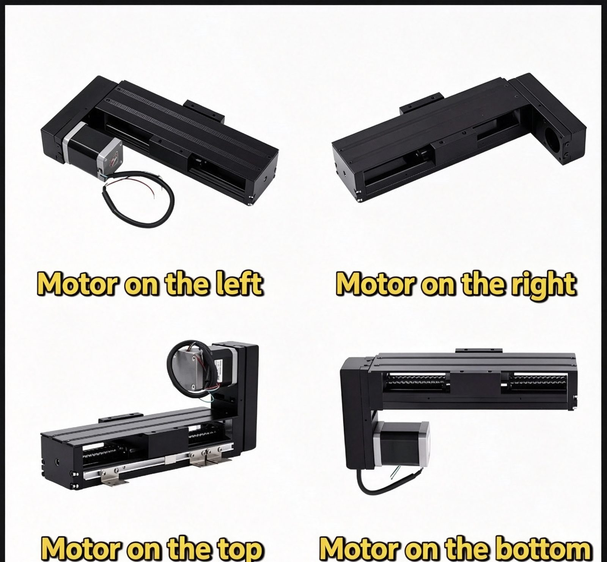

Linear module range
Every module is built and assembled in our own Dongguan workshop. Choose the drive that fits the job, then send your stroke, load, orientation and duty cycle — we come back with a drawing and a price.
01 / SELECTION LOGIC
Choose the drive
Ball screw linear modules
Ball screw and nut
Positioning accuracy comes first
- Positioning accuracy ±0.01 mm, repeat accuracy 0.003–0.01 mm
- Motor mounts on the left, right, top or bottom
- Horizontal or vertical mounting
Belt driven linear modules and slides
Toothed belt
Long, fast moves
- Fully enclosed and semi-enclosed versions
- Long-travel transfer at higher speed than a screw drive
- Horizontal or vertical mounting
Slide table & linear stage modules
Embedded ball screw
A low profile for a tight machine envelope
- The screw sits inside the body, so the module stays low
- Proven 500 mm stroke at ±0.01 mm accuracy
- Repeat accuracy 0.003–0.01 mm
02 / THE RANGE
Families and models
| Family | Models and sizes | Stroke |
|---|---|---|
| KK seriesSingle-axis ball screw module | KK5002 · KK6005 · KK6010 · KK6020 · KK8610 · KK8620 · KK10020 (expected early 2026) | 20–810 mm (KK60) 50–1310 mm (KK86) 70–220 mm standard (KK50) |
| Multi-axis systemsXY and three-axis cantilever assemblies | Assembled from single axes Dual-station body 68 mm wide | Built to your layout |
03 / COMPLETE SYSTEMS
Also built as complete systems
What is inside a module
- Linear guide rails and blocks
- Motor mounting base
- Slider / slide table top plate
- Dust strip and oil scraper
- End block and tailstock
- Oil nozzle
- Ball screw and nut (screw-driven versions)
Options you can add
- Aluminium dust cover
- Motor mounting base
- Fixing platform
- Limit switch
- Motor coupling flange
Motor position
Motor mounts left, right, top, bottom — tell us which side clears your frame.

ENGINEERING HANDOFF
Get this quoted
Send stroke, load, speed, accuracy, environment and duty cycle. We reply with a drawing and a price. Design solutions in 6 hours; delivery as little as 24 hours on stock-based builds.